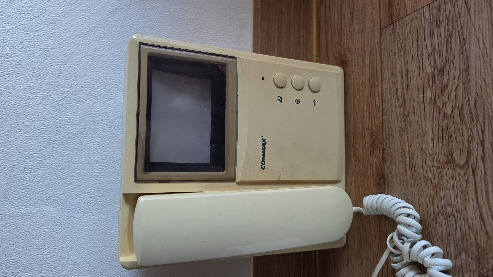
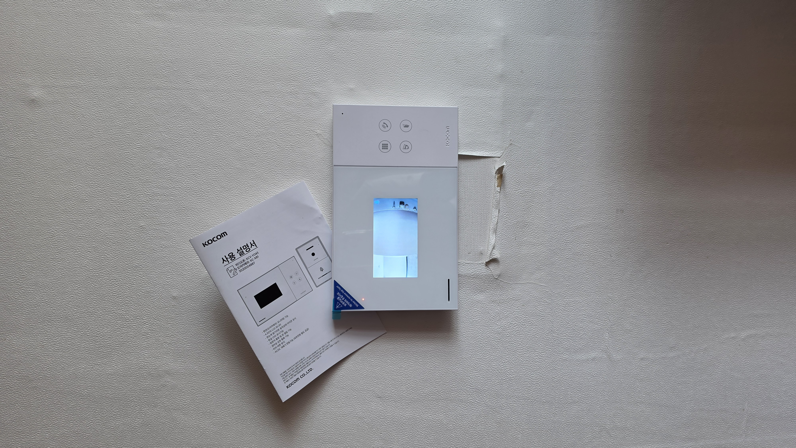
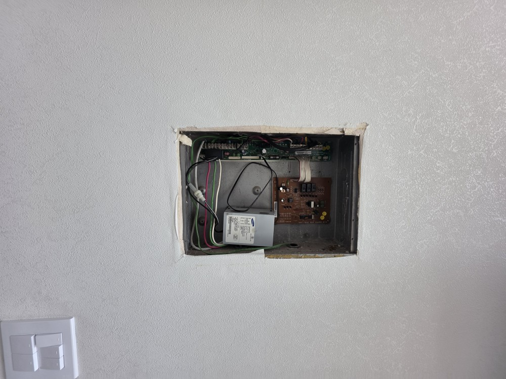
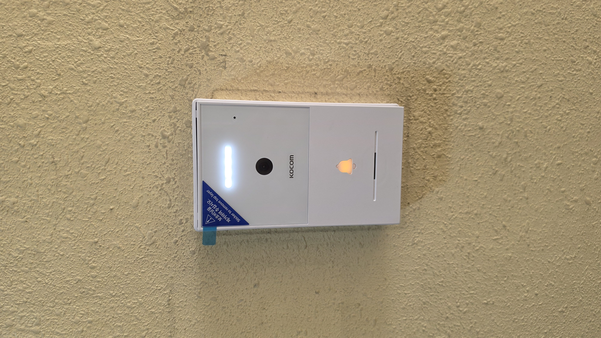

STEP 01 · 기존 구형 기기
1. 기존 구형 인터폰·비디오폰 노후 및 통신 불량 진단
화면 노이즈, 수화기 통화 불량, 1층 공동현관 문열림 미작동 증상을 점검하고 단지별 아날로그(2선/4선) 및 디지털 BUS 통신 규격을 확인합니다.
의정부 신곡동·호원동·장암동·가능동·의정부동 구축 아파트·빌라의 구형 인터폰 고장 수리부터 민락동·낙양동(민락2지구)·금오동·녹양동 월패드 교체 및 현관 도어락 무선 문열림 연동까지! 배선 재포설 없이 기존 배선 신호 분석과 전용 마감판 시공으로 깔끔하게 해결합니다.

1단계 기존 상태 · 구형 노후 기기 및 연동 불가
3~4단계 완료 · 신형 교체 & 도어락 문열림 연동의정부시 현장에서 진행한 기존 구형 기기 철거 → 배선·마감판 작업 → 신형 비디오폰 장착 → 도어락 문열림 연동 과정입니다.
화면 노이즈, 수화기 통화 불량, 1층 공동현관 문열림 미작동 증상을 점검하고 단지별 아날로그(2선/4선) 및 디지털 BUS 통신 규격을 확인합니다.

STEP 02 · 배선 개조·마감판전원선·현관 카메라선·1층 로비폰 및 경비실 통신선을 신형 규격에 맞게 결선하고, 구형 매립함 구멍을 가리는 전용 스틸/아크릴 마감판을 결합합니다.
신형 비디오폰 본체를 수평에 맞춰 밀착 설치한 뒤 현관 초인종 영상·음성 통화, 경비실 호출, 1층 공동현관 원격 문열림 작동을 개통했습니다.

STEP 04 · 도어락 연동 완료비디오폰 내부 무선 송신 모듈과 현관 도어락 수신기를 주파수 매칭하여, 거실 월패드 [문열림] 버튼 한 번으로 현관 도어락까지 즉시 열리도록 세팅했습니다.
| 출장 시공 지역 | 경기도 의정부시 전역 (민락동·낙양동·신곡동·용현동·가능동·의정부동·호원동·장암동·금오동·녹양동) |
|---|---|
| 주요 생활권·단지 | 민락2지구(호반베르디움·반도유보라·금강펜테리움 등), 신곡동(장암주공·신곡현대·은하수 등), 호원동(회룡역·망월사역 인근 단지), 의정부동·가능동 빌라·다세대 |
| 교체 및 호환 기종 | 코콤 · 코맥스 · 삼성 · 현대HT · 경동나비엔 단지 통신 방식 맞춤 호환형 비디오폰·인터폰 |
| 문열림 연동 범위 | 1층 공동현관 로비폰 개방 + 우리 집 현관 디지털 도어락 무선 문열림 동시 연동 |
| 벽면 마감 방식 | 구형 대형 매립박스 철거 후 타공 흔적 노출 없는 맞춤 전용 마감판(보강판) 밀착 시공 |
단지별 통신 방식을 먼저 확인해야 교체 후에도 경비실·1층 현관·도어락이 모두 정상 작동합니다.
신곡동·호원동·장암동 구축 단지와 민락동·낙양동 신축급 단지는 통신 방식이 다릅니다. 기존 기기 사진 1장이면 호환 가능한 정확한 모델을 바로 안내해 드립니다.
삼성·직방·게이트맨·솔리티·코콤·코맥스 등 기존에 쓰시던 도어락에 무선 수신기 모듈만 추가하면 거실 비디오폰에서 현관문을 바로 열어줄 수 있습니다.
전체 교체가 불필요한 단순 단선·전원 이상은 수리로 해결하고, 교체가 필요한 현장은 전용 마감판까지 차량에 상시 보유해 당일 한 번에 끝내드립니다.
의정부 인터폰 비디오폰 설치 수리 전문 도어마스터(서울경기월패드)는 의정부 전 지역 아파트·빌라·오피스텔·상가 당일 및 주말 출장이 가능합니다. 거실 비디오폰 전체 모습과 현관 도어락 안쪽 배터리 커버를 연 사진 2장을 문자로 보내주시면 호환 모델과 출장비 포함 확정 견적을 안내해 드립니다.